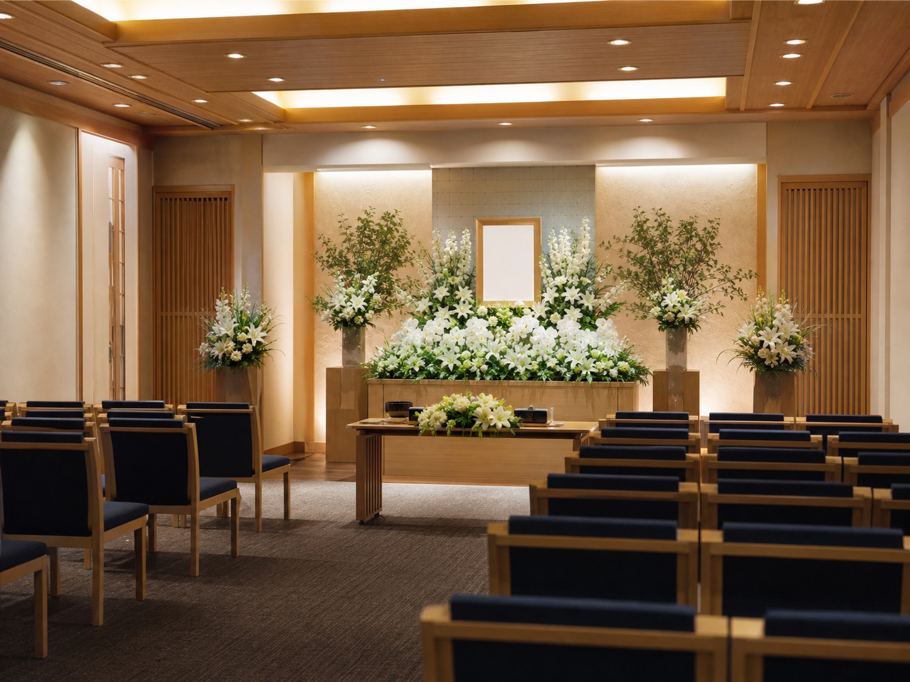

葬祭事業は、ご家族にとってかけがえのない時間に寄り添う仕事です。一つひとつのお別れを大切に、ご遺族の想いに丁寧に向き合い、心穏やかにお見送りいただけるよう、誠実なサポートを提供しています。

家族葬から一般葬まで、ご遺族のご希望とご事情に合わせた葬儀を、地域の式場を拠点に執り行っています。事前のご相談から当日の運営、その後の各種手続きのサポートまで、一貫した体制で支えます。
地域に長く根ざしてきた信頼を大切に、過度な負担をかけない、誠実で透明性のあるサービスを心がけています。
もしもの時に慌てないために。費用やお手続きを、事前に分かりやすくご案内します。
家族葬から一般葬まで、ご遺族のお気持ちとご事情に寄り添った形でお手伝いします。
葬儀後の各種手続きや法要のご相談など、その後も末永くサポートいたします。